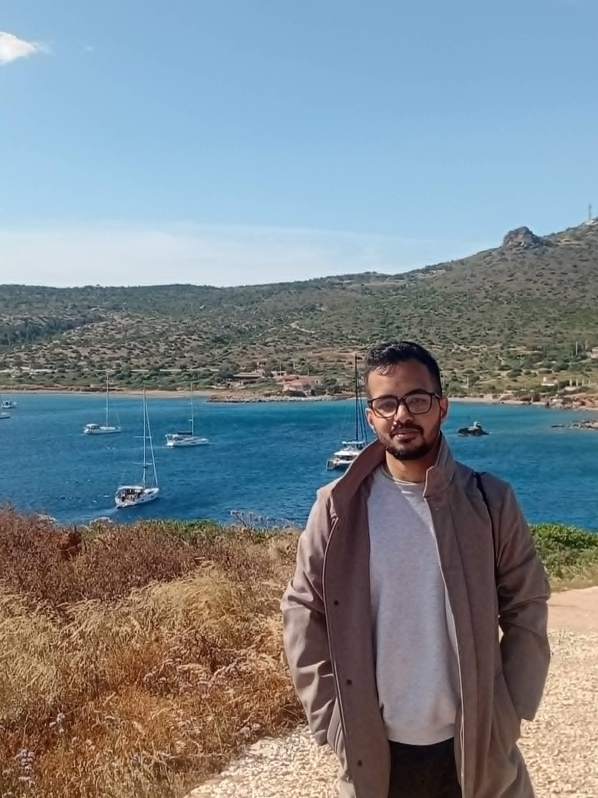

King’s College London
SudarshanShyam
I study how to make data smaller and decisions fairer.

A little background
Full CVKing’s College London
Postdoctoral researcher
2026–presentAarhus University
PhD & postdoc
2023–2026Indian Institute of Science
Research associate
2022Microsoft & Amazon
Software engineer
2019–2021UC San Diego
MS · Computer science
2019IIT Kharagpur
BTech · Electrical engineering
2017
Beyond research
Standup Music